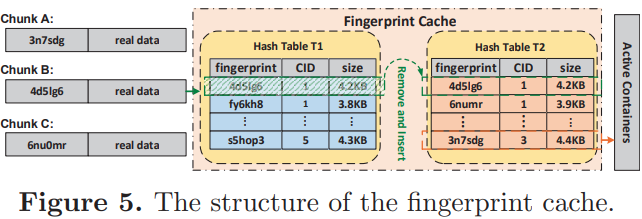
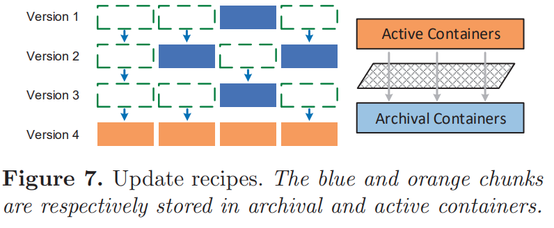

| Venue | Category |
|---|---|
| Middleware'20 | Deduplication Restore |
Improving the Restore Performance via Physical-Locality Middleware for Backup Systems1. SummaryMotivation of this paperHiDeStoreImplementation and Evaluation2. Strength (Contributions of the paper)3. Weakness (Limitations of the paper)4. Some Insights (Future work)
Motivation
Deduplication suffers from low restore performance, since the chunks are heavily fragmented
have to read a large number of containers to obtain all chunks
Limitations of existing work
caching scheme
fail to alleviate the fragmentation problem since the chunks are stored into more containers
rewriting scheme
Open-source
Main insight
identify the chunks that are more likely to be shared by the subsequent backup versions
other chunks (i.e., have the low probability to be shared by the new backup versions) are stored in the containers as the traditional deduplication schemes
Trace analysis
Linux kernal, gcc, fslhomes, and macos
Destorversion tag
indicates the backup version recently containing the chunk
Finding
the chunk not appearing in the current backup version have a low probability to appear in the subsequent backup versions
Key idea:
a reverse online deduplication process
only search the chunks with high probability to be deduplicated with coming chunks
classify and respectively store the hot and cold chunks
Fingerprint cache with double hash

T1: contains the metadata of the chunks in previous version
T2: used to contain the chunks of current version
After deduplication against current version, the chunks not appearing in current version are left in T1
index overhead
the sizes of T1 and T2 are bounded and hardly full
the total size of hash table is limited to the size of one (or two) backup versions
achieves almost the same deduplication ratio like the exact deduplication
still has the extre storage overheadChunk filter to separate chunks
Separately stores the hot and cold chunks by changing the writing paths of the chunks
Container structure
hash table (key: fingerprint, value: a pointer to the corresponding chunks)the hot chunks are temporarily stored in active containers during the deduplication phase
need to compact the active containers to enhance the physical locality, directly merge sparse containers in to the same container without considering the order
Update recipes
all recipes form a chain
need to read multiple recipes to find the concrete location for each chunk when restoring the old backups
high latency need to update the recipes when moving the cold chunks

Restore phase
the recipe contains three types of contain ID (CID)
Garbage collection
HiDeStore has stored the chunks belonging to different backup versions separately
Evaluation
Deduplication ratio
Deduplication throughput
Destor evaluates the number of the request for the full index table
is not absolute throughput (simulate the requests to disks)HiDeStore only needs to search the fingerprint cache without the needs to frequently access the full index table on the disk
Space consumption for index table
it does not need extra space to store the indexes, since HiDeStore deduplicates one backup version against its previous one
Restore performance
HiDeStore overhead
The deletion
propose the idea to separately store the hot chunks and cold chunks
this work only consider the case for a single client backup
recipe background
the data structure of the recipe is a chunk list, and each item contains:
assemble the data stream in memory in the chunk-by-chunk manner
Workload dependence
It can simply trace the chunk distribution among versions and determine whether to use the proposed scheme